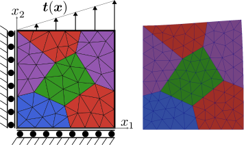

Linear Elasticity

Figure 1: Linear elastically deformed 1mm $\times$ 1mm Ferrite logo.
The full explanation for the underlying FEM theory in this example can be found in the Linear Elasticity tutorial of the Ferrite.jl documentation.
Implementation
The following code is based on the Linear Elasticity tutorial from the Ferrite.jl documentation, with some comments removed for brevity. There are two main modifications:
- Fourth-order
Lagrangeshape functions are used for field approximation:ip = Lagrange{RefTriangle,4}()^2. - High-order quadrature points are used to accommodate the fourth-order shape functions:
qr = QuadratureRule{RefTriangle}(8).
using Ferrite, FerriteGmsh, FerriteOperators, FerriteMultigrid, AlgebraicMultigrid
using Downloads: download
using IterativeSolvers
using TimerOutputs
TimerOutputs.enable_debug_timings(AlgebraicMultigrid)
TimerOutputs.enable_debug_timings(FerriteMultigrid)
Emod = 200.0e3 # Young's modulus [MPa]
ν = 0.3 # Poisson's ratio [-]
Gmod = Emod / (2(1 + ν)) # Shear modulus
Kmod = Emod / (3(1 - 2ν)) # Bulk modulus
C = gradient(ϵ -> 2 * Gmod * dev(ϵ) + 3 * Kmod * vol(ϵ), zero(SymmetricTensor{2,2}))
function assemble_external_forces!(f_ext, dh, facetset, facetvalues, prescribed_traction)
# Create a temporary array for the facet's local contributions to the external force vector
fe_ext = zeros(getnbasefunctions(facetvalues))
for facet in FacetIterator(dh, facetset)
# Update the facetvalues to the correct facet number
reinit!(facetvalues, facet)
# Reset the temporary array for the next facet
fill!(fe_ext, 0.0)
# Access the cell's coordinates
cell_coordinates = getcoordinates(facet)
for qp in 1:getnquadpoints(facetvalues)
# Calculate the global coordinate of the quadrature point.
x = spatial_coordinate(facetvalues, qp, cell_coordinates)
tₚ = prescribed_traction(x)
# Get the integration weight for the current quadrature point.
dΓ = getdetJdV(facetvalues, qp)
for i in 1:getnbasefunctions(facetvalues)
Nᵢ = shape_value(facetvalues, qp, i)
fe_ext[i] += tₚ ⋅ Nᵢ * dΓ
end
end
# Add the local contributions to the correct indices in the global external force vector
assemble!(f_ext, celldofs(facet), fe_ext)
end
return f_ext
end
function assemble_cell!(ke, cellvalues, C)
for q_point in 1:getnquadpoints(cellvalues)
# Get the integration weight for the quadrature point
dΩ = getdetJdV(cellvalues, q_point)
for i in 1:getnbasefunctions(cellvalues)
# Gradient of the test function
∇Nᵢ = shape_gradient(cellvalues, q_point, i)
for j in 1:getnbasefunctions(cellvalues)
# Symmetric gradient of the trial function
∇ˢʸᵐNⱼ = shape_symmetric_gradient(cellvalues, q_point, j)
ke[i, j] += (∇Nᵢ ⊡ C ⊡ ∇ˢʸᵐNⱼ) * dΩ
end
end
end
return ke
end
function assemble_global!(K, dh, cellvalues, C)
# Allocate the element stiffness matrix
n_basefuncs = getnbasefunctions(cellvalues)
ke = zeros(n_basefuncs, n_basefuncs)
# Create an assembler
assembler = start_assemble(K)
# Loop over all cells
for cell in CellIterator(dh)
# Update the shape function gradients based on the cell coordinates
reinit!(cellvalues, cell)
# Reset the element stiffness matrix
fill!(ke, 0.0)
# Compute element contribution
assemble_cell!(ke, cellvalues, C)
# Assemble ke into K
assemble!(assembler, celldofs(cell), ke)
end
return K
end
function linear_elasticity_2d(C)
logo_mesh = "logo.geo"
asset_url = "https://raw.githubusercontent.com/Ferrite-FEM/Ferrite.jl/gh-pages/assets/"
isfile(logo_mesh) || download(string(asset_url, logo_mesh), logo_mesh)
grid = togrid(logo_mesh)
addfacetset!(grid, "top", x -> x[2] ≈ 1.0) # facets for which x[2] ≈ 1.0 for all nodes
addfacetset!(grid, "left", x -> abs(x[1]) < 1.0e-6)
addfacetset!(grid, "bottom", x -> abs(x[2]) < 1.0e-6)
dim = 2
order = 4
ip = Lagrange{RefTriangle,order}()^dim # vector valued interpolation
ip_coarse = Lagrange{RefTriangle,1}()^dim
qr = QuadratureRule{RefTriangle}(8)
qr_face = FacetQuadratureRule{RefTriangle}(6)
cellvalues = CellValues(qr, ip)
facetvalues = FacetValues(qr_face, ip)
dhh = DofHandlerHierarchy(grid, 2)
add!(dhh, :u, [ip_coarse, ip])
close!(dhh)
chh = ConstraintHandlerHierarchy(dhh)
add!(chh, dh->Dirichlet(:u, getfacetset(dh.grid, "bottom"), (x, t) -> 0.0, 2))
add!(chh, dh->Dirichlet(:u, getfacetset(dh.grid, "left"), (x, t) -> 0.0, 1))
close!(chh)
traction(x) = Vec(0.0, 20.0e3 * x[1])
dh = dhh[end]
ch = chh[end]
A = allocate_matrix(dh)
assemble_global!(A, dh, cellvalues, C)
b = zeros(ndofs(dh))
assemble_external_forces!(b, dh, getfacetset(grid, "top"), facetvalues, traction)
apply!(A, b, ch)
return A, b, dhh, chh
endlinear_elasticity_2d (generic function with 1 method)Rediscretization
For the rediscretization approach we can define the assembly for the levels via FerriteOperators directly.
"""
LinearElasticityIntegrator{TC, QRC} <: AbstractBilinearIntegrator
Multigrid problem for linear elasticity.
Implements the FerriteOperators `AbstractBilinearIntegrator` interface.
"""
struct LinearElasticityIntegrator{TC <: SymmetricTensor, QRC} <: FerriteOperators.AbstractBilinearIntegrator
ℂ::TC # material stiffness tensor (4th order)
qrc::QRC
end
struct LinearElasticityElementCache{CV, TC} <: FerriteOperators.AbstractVolumetricElementCache
cv::CV
ℂ::TC
end
function FerriteOperators.setup_element_cache(problem::LinearElasticityIntegrator, sdh::SubDofHandler)
qr = getquadraturerule(problem.qrc, sdh)
ip = Ferrite.getfieldinterpolation(sdh, first(Ferrite.getfieldnames(sdh)))
first_cell = getcells(Ferrite.get_grid(sdh.dh), first(sdh.cellset))
ip_geo = Ferrite.geometric_interpolation(typeof(first_cell))
cv = CellValues(qr, ip, ip_geo)
return LinearElasticityElementCache(cv, problem.ℂ)
end
FerriteOperators.reinit_values!(cache::LinearElasticityElementCache, cell) = reinit!(cache.cv, cell)
FerriteOperators.provides_analytic(::Type{<:LinearElasticityElementCache}, ::JacobianKind) = true
function FerriteOperators.assemble_cell!(req::JacobianRequest{:u}, cache::LinearElasticityElementCache, args::CellArgs)
ℂ = cache.ℂ
for q_point in 1:getnquadpoints(cache.cv)
dΩ = getdetJdV(cache.cv, q_point)
for i in 1:getnbasefunctions(cache.cv)
∇ˢʸᵐNᵢ = shape_symmetric_gradient(cache.cv, q_point, i)
for j in 1:getnbasefunctions(cache.cv)
∇ˢʸᵐNⱼ = shape_symmetric_gradient(cache.cv, q_point, j)
req.K[i, j] += (∇ˢʸᵐNᵢ ⊡ ℂ ⊡ ∇ˢʸᵐNⱼ) * dΩ
end
end
end
endThe bilinear form induces a linear operator, so its residual is the element matrix acting on the element vector — mandatory so the element also composes into nonlinear operators.
function FerriteOperators.assemble_cell!(req::ResidualRequest, cache::LinearElasticityElementCache, args::CellArgs)
ℂ = cache.ℂ
uₑ = args.states.u
for q_point in 1:getnquadpoints(cache.cv)
dΩ = getdetJdV(cache.cv, q_point)
εu = function_symmetric_gradient(cache.cv, q_point, uₑ)
for i in 1:getnbasefunctions(cache.cv)
req.r[i] += (shape_symmetric_gradient(cache.cv, q_point, i) ⊡ ℂ ⊡ εu) * dΩ
end
end
endNear Null Space (NNS)
In multigrid methods for problems with vector-valued unknowns, such as linear elasticity, the near null space represents the low energy mode or the smooth error that needs to be captured in the coarser grid when using SA-AMG (Smoothed Aggregation Algebraic Multigrid), more on the topic can be found in Schroder [1].
For 2D linear elasticity problems, the rigid body modes are:
- Translation in the x-direction,
- Translation in the y-direction,
- Rotation about the z-axis (i.e., $x_3$): each point (x, y) is mapped to (-y, x).
The function create_nns constructs the NNS matrix B ∈ ℝ^{n × 3}, where n is the number of degrees of freedom (DOFs) for the case of p = 1 (i.e., linear interpolation), because B is only relevant for AMG.
function create_nns(dh, fieldname = first(dh.field_names))
@assert length(dh.field_names) == 1 "Only a single field is supported for now."
coords_flat = zeros(ndofs(dh))
apply_analytical!(coords_flat, dh, fieldname, x -> x)
coords = reshape(coords_flat, (length(coords_flat) ÷ 2, 2))
grid = dh.grid
B = zeros(Float64, ndofs(dh), 3)
B[1:2:end, 1] .= 1 # x - translation
B[2:2:end, 2] .= 1 # y - translation
# in-plane rotation (x,y) → (-y,x)
x = coords[:, 1]
y = coords[:, 2]
B[1:2:end, 3] .= -y
B[2:2:end, 3] .= x
return B
endcreate_nns (generic function with 2 methods)Setup the linear elasticity problem
Load FerriteMultigrid to access the p-multigrid solver.
using FerriteMultigridConstruct the linear elasticity problem with 4th order polynomial shape functions.
A, b, dhh, chh = linear_elasticity_2d(C);Info : Reading 'logo.geo'...
Info : Done reading 'logo.geo'
Info : Meshing 1D...
Info : [ 0%] Meshing curve 1 (Line)
Info : [ 10%] Meshing curve 2 (Line)
Info : [ 20%] Meshing curve 3 (Line)
Info : [ 20%] Meshing curve 4 (Line)
Info : [ 30%] Meshing curve 5 (Line)
Info : [ 30%] Meshing curve 6 (Line)
Info : [ 40%] Meshing curve 7 (Line)
Info : [ 40%] Meshing curve 8 (Line)
Info : [ 50%] Meshing curve 9 (Line)
Info : [ 60%] Meshing curve 10 (Line)
Info : [ 60%] Meshing curve 11 (Line)
Info : [ 70%] Meshing curve 12 (Line)
Info : [ 70%] Meshing curve 13 (Line)
Info : [ 80%] Meshing curve 14 (Line)
Info : [ 80%] Meshing curve 15 (Line)
Info : [ 90%] Meshing curve 16 (Line)
Info : [ 90%] Meshing curve 17 (Line)
Info : [100%] Meshing curve 18 (Line)
Info : Done meshing 1D (Wall 0.00056228s, CPU 0.000563s)
Info : Meshing 2D...
Info : [ 0%] Meshing surface 1 (Plane, Frontal-Delaunay)
Info : [ 20%] Meshing surface 2 (Plane, Frontal-Delaunay)
Info : [ 40%] Meshing surface 3 (Plane, Frontal-Delaunay)
Info : [ 60%] Meshing surface 4 (Plane, Frontal-Delaunay)
Info : [ 70%] Meshing surface 5 (Plane, Frontal-Delaunay)
Info : [ 90%] Meshing surface 6 (Plane, Frontal-Delaunay)
Info : Done meshing 2D (Wall 0.00116264s, CPU 0.001162s)
Info : 104 nodes 245 elementsConstruct the near null space (NNS) matrix
B = create_nns(dhh[1])208×3 Matrix{Float64}:
1.0 0.0 -1.0
0.0 1.0 0.801535
1.0 0.0 -0.253172
0.0 1.0 0.454964
1.0 0.0 -0.612999
0.0 1.0 0.900767
1.0 0.0 -0.0858959
0.0 1.0 0.417361
1.0 0.0 -0.66085
0.0 1.0 0.820318
⋮
0.0 1.0 0.11219
1.0 0.0 -0.464069
0.0 1.0 0.592985
1.0 0.0 -0.450733
0.0 1.0 0.301241
1.0 0.0 -0.677392
0.0 1.0 1.0
1.0 0.0 -0.477795
0.0 1.0 0.126586Since NNS matrix is only relevant for AMG, and it is not used in the p-multigrid solver, therefore, B has to provided using linear field approximation (i.e., p = 1) when using AMG as the coarse solver, otherwise (e.g., using Pinv as the coarse solver), then we don't have to provide it.
P-multigrid Configuration
reset_timer!()
pcoarse_solver = SmoothedAggregationCoarseSolver(; B)SmoothedAggregationCoarseSolver{Tuple{}, Base.Pairs{Symbol, Matrix{Float64}, Nothing, @NamedTuple{B::Matrix{Float64}}}}((), Base.Pairs(:B => [1.0 0.0 -1.0; 0.0 1.0 0.801534880751; … ; 1.0 0.0 -0.47779490322723067; 0.0 1.0 0.1265859930873549]))0. CG as baseline
@timeit "CG" x_cg = IterativeSolvers.cg(A, b; maxiter = 1000, verbose=false)2914-element Vector{Float64}:
-0.009922773140937731
0.027908992918940487
-0.01227354490809059
0.02778766287825086
-0.011716098076385625
0.03380248712536394
-0.010480498289947952
0.027964097065306594
-0.011058650993832485
0.02796370462681717
⋮
0.020447374000925944
-0.0034252013983498398
0.019667499675877137
-0.006499317727402122
0.02796650153472074
-0.0070905775885465655
0.029186469235605944
-0.007055602278683182
0.029169542098417661. Galerkin Coarsening Strategy
config_gal = pmultigrid_config(coarse_strategy = Galerkin())
@timeit "Galerkin only" x_gal, res_gal = solve(A, b, dhh, chh, config_gal; pcoarse_solver, log=true, maxiter = 1000, rtol = 1e-10)
builder_gal = PMultigridPreconBuilder(dhh, chh, config_gal; pcoarse_solver)
@timeit "Build preconditioner" Pl_gal = builder_gal(A)[1]
@timeit "Galerkin CG" x_gcg, res_gcg = IterativeSolvers.cg(A, b; Pl = Pl_gal, maxiter = 1000, log=true, verbose=false)([-0.009922773159831979, 0.027908992912073955, -0.012273544894648485, 0.02778766291151923, -0.011716098097380147, 0.033802487124505495, -0.010480498302216283, 0.027964097066534497, -0.011058650998156056, 0.027963704639539656 … -0.003571423564662785, 0.020447373993602923, -0.0034252014257079868, 0.019667499670456293, -0.00649931771238124, 0.027966501509221774, -0.0070905775684436765, 0.02918646920821057, -0.007055602262622334, 0.02916954207108605], Converged after 25 iterations.)2. Rediscretization Coarsening Strategy
# Rediscretization Coarsening Strategy
config_red = pmultigrid_config(coarse_strategy = Rediscretization(LinearElasticityIntegrator(C, QuadratureRuleCollection(7))))
@timeit "Rediscretization only" x_red, res_red = solve(A, b, dhh, chh, config_red; pcoarse_solver, log=true, maxiter = 1000, rtol = 1e-10)
builder_red = PMultigridPreconBuilder(dhh, chh, config_red; pcoarse_solver)
@timeit "Build preconditioner" Pl_red = builder_red(A)[1]
@timeit "Rediscretization CG" x_rcg, res_rcg = IterativeSolvers.cg(A, b; Pl = Pl_red, maxiter = 1000, log=true, verbose=false)
print_timer(title = "Analysis with $(getncells(dhh[end].grid)) elements", linechars = :ascii)-----------------------------------------------------------------------------------------------
Analysis with 174 elements Time Allocations
----------------------- ------------------------
Tot / % measured: 1.09s / 85.0% 138MiB / 88.5%
Section ncalls time %tot avg alloc %tot avg
-----------------------------------------------------------------------------------------------
Rediscretization only 1 738ms 79.8% 738ms 101MiB 82.9% 101MiB
init 1 292ms 31.6% 292ms 49.6MiB 40.7% 49.6MiB
pmultigrid numeric 1 292ms 31.5% 292ms 48.3MiB 39.7% 48.3MiB
setup coarse operator 1 234ms 25.4% 234ms 42.3MiB 34.7% 42.3MiB
assemble coarse operator 1 56.8ms 6.1% 56.8ms 5.43MiB 4.5% 5.43MiB
coarse solver setup 1 435μs 0.0% 435μs 557KiB 0.4% 557KiB
extend_hierarchy! 2 338μs 0.0% 169μs 540KiB 0.4% 270KiB
fit candidates 2 117μs 0.0% 58.7μs 82.1KiB 0.1% 41.0KiB
improve candidates 2 60.5μs 0.0% 30.3μs 0.00B 0.0% 0.00B
RAP 2 58.7μs 0.0% 29.3μs 180KiB 0.1% 90.0KiB
restriction setup 2 42.5μs 0.0% 21.2μs 194KiB 0.2% 97.0KiB
aggregation 2 31.5μs 0.0% 15.7μs 22.4KiB 0.0% 11.2KiB
strength 2 22.3μs 0.0% 11.2μs 51.9KiB 0.0% 26.0KiB
smoother setup 2 561ns 0.0% 280ns 704B 0.0% 352B
coarse solver setup 1 86.9μs 0.0% 86.9μs 7.64KiB 0.0% 7.64KiB
prologue 1 3.21μs 0.0% 3.21μs 6.93KiB 0.0% 6.93KiB
smoother setup 1 812ns 0.0% 812ns 576B 0.0% 576B
pmultigrid symbolic 1 851μs 0.1% 851μs 1.29MiB 1.1% 1.29MiB
build prolongator 1 846μs 0.1% 846μs 1.28MiB 1.1% 1.28MiB
setup transfer operator 1 581μs 0.1% 581μs 1.26MiB 1.0% 1.26MiB
assemble transfer operator 1 228μs 0.0% 228μs 1.58KiB 0.0% 1.58KiB
row normalization 1 21.8μs 0.0% 21.8μs 0.00B 0.0% 0.00B
build restriction 1 171ns 0.0% 171ns 48.0B 0.0% 48.0B
solve! 1 42.4ms 4.6% 42.4ms 4.80MiB 3.9% 4.80MiB
Presmoother 100 14.9ms 1.6% 149μs 0.00B 0.0% 0.00B
Postsmoother 100 14.9ms 1.6% 149μs 0.00B 0.0% 0.00B
Residual eval 100 4.42ms 0.5% 44.2μs 0.00B 0.0% 0.00B
Coarse solve 100 1.47ms 0.2% 14.7μs 302KiB 0.2% 3.02KiB
Presmoother 200 484μs 0.1% 2.42μs 0.00B 0.0% 0.00B
Postsmoother 200 476μs 0.1% 2.38μs 0.00B 0.0% 0.00B
Residual eval 200 166μs 0.0% 832ns 0.00B 0.0% 0.00B
Restriction 200 75.1μs 0.0% 375ns 0.00B 0.0% 0.00B
Coarse solve 100 61.6μs 0.0% 616ns 71.9KiB 0.1% 736B
Prolongation 200 57.6μs 0.0% 288ns 0.00B 0.0% 0.00B
Restriction 100 1.01ms 0.1% 10.1μs 0.00B 0.0% 0.00B
Prolongation 100 668μs 0.1% 6.68μs 0.00B 0.0% 0.00B
Build preconditioner 2 77.4ms 8.4% 38.7ms 7.85MiB 6.5% 3.93MiB
pmultigrid hierarchy 2 74.4ms 8.0% 37.2ms 5.62MiB 4.6% 2.81MiB
RAP numeric 1 1.92ms 0.2% 1.92ms 752B 0.0% 752B
coarse solver setup 2 995μs 0.1% 497μs 1.46MiB 1.2% 748KiB
extend_hierarchy! 4 855μs 0.1% 214μs 1.43MiB 1.2% 366KiB
improve candidates 4 245μs 0.0% 61.3μs 0.00B 0.0% 0.00B
fit candidates 4 205μs 0.0% 51.1μs 168KiB 0.1% 41.9KiB
RAP 4 187μs 0.0% 46.7μs 379KiB 0.3% 94.6KiB
restriction setup 4 114μs 0.0% 28.6μs 621KiB 0.5% 155KiB
strength 4 71.4μs 0.0% 17.9μs 251KiB 0.2% 62.7KiB
aggregation 4 22.6μs 0.0% 5.66μs 28.6KiB 0.0% 7.16KiB
smoother setup 4 732ns 0.0% 183ns 1.38KiB 0.0% 352B
coarse solver setup 2 129μs 0.0% 64.6μs 15.4KiB 0.0% 7.68KiB
prologue 2 2.17μs 0.0% 1.09μs 13.9KiB 0.0% 6.93KiB
setup coarse operator 1 282μs 0.0% 282μs 128KiB 0.1% 128KiB
assemble coarse operator 1 189μs 0.0% 189μs 672B 0.0% 672B
smoother setup 2 1.17μs 0.0% 586ns 1.12KiB 0.0% 576B
RAP symbolic 1 2.26ms 0.2% 2.26ms 967KiB 0.8% 967KiB
build prolongator 1 702μs 0.1% 702μs 1.28MiB 1.1% 1.28MiB
setup transfer operator 1 448μs 0.0% 448μs 1.26MiB 1.0% 1.26MiB
assemble transfer operator 1 223μs 0.0% 223μs 1.58KiB 0.0% 1.58KiB
row normalization 1 22.2μs 0.0% 22.2μs 0.00B 0.0% 0.00B
build restriction 1 181ns 0.0% 181ns 48.0B 0.0% 48.0B
Galerkin only 1 51.7ms 5.6% 51.7ms 10.0MiB 8.3% 10.0MiB
solve! 1 45.5ms 4.9% 45.5ms 4.81MiB 3.9% 4.81MiB
Postsmoother 100 15.3ms 1.7% 153μs 0.00B 0.0% 0.00B
Presmoother 100 15.2ms 1.6% 152μs 256B 0.0% 2.56B
Residual eval 100 4.48ms 0.5% 44.8μs 0.00B 0.0% 0.00B
Coarse solve 100 3.77ms 0.4% 37.7μs 305KiB 0.2% 3.05KiB
Presmoother 200 1.55ms 0.2% 7.75μs 0.00B 0.0% 0.00B
Postsmoother 200 1.44ms 0.2% 7.21μs 0.00B 0.0% 0.00B
Residual eval 200 418μs 0.0% 2.09μs 0.00B 0.0% 0.00B
Restriction 200 76.5μs 0.0% 383ns 0.00B 0.0% 0.00B
Prolongation 200 64.7μs 0.0% 323ns 0.00B 0.0% 0.00B
Coarse solve 100 60.9μs 0.0% 609ns 71.9KiB 0.1% 736B
Restriction 100 1.12ms 0.1% 11.2μs 0.00B 0.0% 0.00B
Prolongation 100 716μs 0.1% 7.16μs 0.00B 0.0% 0.00B
init 1 6.09ms 0.7% 6.09ms 5.24MiB 4.3% 5.24MiB
pmultigrid symbolic 1 3.28ms 0.4% 3.28ms 4.28MiB 3.5% 4.28MiB
RAP symbolic 1 2.40ms 0.3% 2.40ms 968KiB 0.8% 968KiB
build prolongator 1 795μs 0.1% 795μs 1.29MiB 1.1% 1.29MiB
setup transfer operator 1 526μs 0.1% 526μs 1.26MiB 1.0% 1.26MiB
assemble transfer operator 1 235μs 0.0% 235μs 2.19KiB 0.0% 2.19KiB
row normalization 1 22.6μs 0.0% 22.6μs 0.00B 0.0% 0.00B
build restriction 1 110ns 0.0% 110ns 48.0B 0.0% 48.0B
pmultigrid numeric 1 2.81ms 0.3% 2.81ms 0.96MiB 0.8% 0.96MiB
RAP numeric 1 2.00ms 0.2% 2.00ms 944B 0.0% 944B
coarse solver setup 1 790μs 0.1% 790μs 951KiB 0.8% 951KiB
extend_hierarchy! 2 585μs 0.1% 293μs 927KiB 0.7% 463KiB
improve candidates 2 177μs 0.0% 88.5μs 0.00B 0.0% 0.00B
RAP 2 131μs 0.0% 65.4μs 199KiB 0.2% 99.3KiB
fit candidates 2 120μs 0.0% 60.2μs 85.4KiB 0.1% 42.7KiB
restriction setup 2 96.5μs 0.0% 48.2μs 428KiB 0.3% 214KiB
strength 2 47.5μs 0.0% 23.8μs 199KiB 0.2% 99.3KiB
aggregation 2 7.53μs 0.0% 3.77μs 6.78KiB 0.0% 3.39KiB
smoother setup 2 310ns 0.0% 155ns 704B 0.0% 352B
coarse solver setup 1 190μs 0.0% 190μs 13.7KiB 0.0% 13.7KiB
prologue 1 1.14μs 0.0% 1.14μs 6.93KiB 0.0% 6.93KiB
smoother setup 1 571ns 0.0% 571ns 576B 0.0% 576B
CG 1 33.2ms 3.6% 33.2ms 93.9KiB 0.1% 93.9KiB
Rediscretization CG 1 12.0ms 1.3% 12.0ms 834KiB 0.7% 834KiB
Presmoother 28 4.20ms 0.5% 150μs 0.00B 0.0% 0.00B
Postsmoother 28 4.18ms 0.5% 149μs 0.00B 0.0% 0.00B
Residual eval 28 1.24ms 0.1% 44.1μs 0.00B 0.0% 0.00B
Coarse solve 28 435μs 0.0% 15.5μs 86.1KiB 0.1% 3.08KiB
Postsmoother 56 146μs 0.0% 2.60μs 0.00B 0.0% 0.00B
Presmoother 56 139μs 0.0% 2.47μs 0.00B 0.0% 0.00B
Residual eval 56 44.3μs 0.0% 792ns 0.00B 0.0% 0.00B
Coarse solve 28 22.2μs 0.0% 794ns 20.1KiB 0.0% 736B
Restriction 56 21.3μs 0.0% 380ns 0.00B 0.0% 0.00B
Prolongation 56 17.2μs 0.0% 308ns 0.00B 0.0% 0.00B
Restriction 28 292μs 0.0% 10.4μs 0.00B 0.0% 0.00B
Prolongation 28 191μs 0.0% 6.83μs 0.00B 0.0% 0.00B
Galerkin CG 1 11.5ms 1.2% 11.5ms 759KiB 0.6% 759KiB
Postsmoother 25 3.81ms 0.4% 152μs 0.00B 0.0% 0.00B
Presmoother 25 3.80ms 0.4% 152μs 0.00B 0.0% 0.00B
Residual eval 25 1.11ms 0.1% 44.6μs 0.00B 0.0% 0.00B
Coarse solve 25 958μs 0.1% 38.3μs 77.9KiB 0.1% 3.12KiB
Presmoother 50 382μs 0.0% 7.64μs 0.00B 0.0% 0.00B
Postsmoother 50 367μs 0.0% 7.35μs 0.00B 0.0% 0.00B
Residual eval 50 106μs 0.0% 2.12μs 0.00B 0.0% 0.00B
Restriction 50 19.4μs 0.0% 389ns 0.00B 0.0% 0.00B
Prolongation 50 16.8μs 0.0% 335ns 0.00B 0.0% 0.00B
Coarse solve 25 15.9μs 0.0% 637ns 18.0KiB 0.0% 736B
Restriction 25 276μs 0.0% 11.1μs 0.00B 0.0% 0.00B
Prolongation 25 180μs 0.0% 7.18μs 0.00B 0.0% 0.00B
build prolongator 1 752μs 0.1% 752μs 1.28MiB 1.1% 1.28MiB
setup transfer operator 1 490μs 0.1% 490μs 1.26MiB 1.0% 1.26MiB
assemble transfer operator 1 229μs 0.0% 229μs 1.58KiB 0.0% 1.58KiB
row normalization 1 21.7μs 0.0% 21.7μs 0.00B 0.0% 0.00B
build restriction 1 231ns 0.0% 231ns 48.0B 0.0% 48.0B
-----------------------------------------------------------------------------------------------Plain program
Here follows a version of the program without any comments. The file is also available here: linear_elasticity.jl.
using Ferrite, FerriteGmsh, FerriteOperators, FerriteMultigrid, AlgebraicMultigrid
using Downloads: download
using IterativeSolvers
using TimerOutputs
TimerOutputs.enable_debug_timings(AlgebraicMultigrid)
TimerOutputs.enable_debug_timings(FerriteMultigrid)
Emod = 200.0e3 # Young's modulus [MPa]
ν = 0.3 # Poisson's ratio [-]
Gmod = Emod / (2(1 + ν)) # Shear modulus
Kmod = Emod / (3(1 - 2ν)) # Bulk modulus
C = gradient(ϵ -> 2 * Gmod * dev(ϵ) + 3 * Kmod * vol(ϵ), zero(SymmetricTensor{2,2}))
function assemble_external_forces!(f_ext, dh, facetset, facetvalues, prescribed_traction)
# Create a temporary array for the facet's local contributions to the external force vector
fe_ext = zeros(getnbasefunctions(facetvalues))
for facet in FacetIterator(dh, facetset)
# Update the facetvalues to the correct facet number
reinit!(facetvalues, facet)
# Reset the temporary array for the next facet
fill!(fe_ext, 0.0)
# Access the cell's coordinates
cell_coordinates = getcoordinates(facet)
for qp in 1:getnquadpoints(facetvalues)
# Calculate the global coordinate of the quadrature point.
x = spatial_coordinate(facetvalues, qp, cell_coordinates)
tₚ = prescribed_traction(x)
# Get the integration weight for the current quadrature point.
dΓ = getdetJdV(facetvalues, qp)
for i in 1:getnbasefunctions(facetvalues)
Nᵢ = shape_value(facetvalues, qp, i)
fe_ext[i] += tₚ ⋅ Nᵢ * dΓ
end
end
# Add the local contributions to the correct indices in the global external force vector
assemble!(f_ext, celldofs(facet), fe_ext)
end
return f_ext
end
function assemble_cell!(ke, cellvalues, C)
for q_point in 1:getnquadpoints(cellvalues)
# Get the integration weight for the quadrature point
dΩ = getdetJdV(cellvalues, q_point)
for i in 1:getnbasefunctions(cellvalues)
# Gradient of the test function
∇Nᵢ = shape_gradient(cellvalues, q_point, i)
for j in 1:getnbasefunctions(cellvalues)
# Symmetric gradient of the trial function
∇ˢʸᵐNⱼ = shape_symmetric_gradient(cellvalues, q_point, j)
ke[i, j] += (∇Nᵢ ⊡ C ⊡ ∇ˢʸᵐNⱼ) * dΩ
end
end
end
return ke
end
function assemble_global!(K, dh, cellvalues, C)
# Allocate the element stiffness matrix
n_basefuncs = getnbasefunctions(cellvalues)
ke = zeros(n_basefuncs, n_basefuncs)
# Create an assembler
assembler = start_assemble(K)
# Loop over all cells
for cell in CellIterator(dh)
# Update the shape function gradients based on the cell coordinates
reinit!(cellvalues, cell)
# Reset the element stiffness matrix
fill!(ke, 0.0)
# Compute element contribution
assemble_cell!(ke, cellvalues, C)
# Assemble ke into K
assemble!(assembler, celldofs(cell), ke)
end
return K
end
function linear_elasticity_2d(C)
logo_mesh = "logo.geo"
asset_url = "https://raw.githubusercontent.com/Ferrite-FEM/Ferrite.jl/gh-pages/assets/"
isfile(logo_mesh) || download(string(asset_url, logo_mesh), logo_mesh)
grid = togrid(logo_mesh)
addfacetset!(grid, "top", x -> x[2] ≈ 1.0) # facets for which x[2] ≈ 1.0 for all nodes
addfacetset!(grid, "left", x -> abs(x[1]) < 1.0e-6)
addfacetset!(grid, "bottom", x -> abs(x[2]) < 1.0e-6)
dim = 2
order = 4
ip = Lagrange{RefTriangle,order}()^dim # vector valued interpolation
ip_coarse = Lagrange{RefTriangle,1}()^dim
qr = QuadratureRule{RefTriangle}(8)
qr_face = FacetQuadratureRule{RefTriangle}(6)
cellvalues = CellValues(qr, ip)
facetvalues = FacetValues(qr_face, ip)
dhh = DofHandlerHierarchy(grid, 2)
add!(dhh, :u, [ip_coarse, ip])
close!(dhh)
chh = ConstraintHandlerHierarchy(dhh)
add!(chh, dh->Dirichlet(:u, getfacetset(dh.grid, "bottom"), (x, t) -> 0.0, 2))
add!(chh, dh->Dirichlet(:u, getfacetset(dh.grid, "left"), (x, t) -> 0.0, 1))
close!(chh)
traction(x) = Vec(0.0, 20.0e3 * x[1])
dh = dhh[end]
ch = chh[end]
A = allocate_matrix(dh)
assemble_global!(A, dh, cellvalues, C)
b = zeros(ndofs(dh))
assemble_external_forces!(b, dh, getfacetset(grid, "top"), facetvalues, traction)
apply!(A, b, ch)
return A, b, dhh, chh
end
"""
LinearElasticityIntegrator{TC, QRC} <: AbstractBilinearIntegrator
Multigrid problem for linear elasticity.
Implements the FerriteOperators `AbstractBilinearIntegrator` interface.
"""
struct LinearElasticityIntegrator{TC <: SymmetricTensor, QRC} <: FerriteOperators.AbstractBilinearIntegrator
ℂ::TC # material stiffness tensor (4th order)
qrc::QRC
end
struct LinearElasticityElementCache{CV, TC} <: FerriteOperators.AbstractVolumetricElementCache
cv::CV
ℂ::TC
end
function FerriteOperators.setup_element_cache(problem::LinearElasticityIntegrator, sdh::SubDofHandler)
qr = getquadraturerule(problem.qrc, sdh)
ip = Ferrite.getfieldinterpolation(sdh, first(Ferrite.getfieldnames(sdh)))
first_cell = getcells(Ferrite.get_grid(sdh.dh), first(sdh.cellset))
ip_geo = Ferrite.geometric_interpolation(typeof(first_cell))
cv = CellValues(qr, ip, ip_geo)
return LinearElasticityElementCache(cv, problem.ℂ)
end
FerriteOperators.reinit_values!(cache::LinearElasticityElementCache, cell) = reinit!(cache.cv, cell)
FerriteOperators.provides_analytic(::Type{<:LinearElasticityElementCache}, ::JacobianKind) = true
function FerriteOperators.assemble_cell!(req::JacobianRequest{:u}, cache::LinearElasticityElementCache, args::CellArgs)
ℂ = cache.ℂ
for q_point in 1:getnquadpoints(cache.cv)
dΩ = getdetJdV(cache.cv, q_point)
for i in 1:getnbasefunctions(cache.cv)
∇ˢʸᵐNᵢ = shape_symmetric_gradient(cache.cv, q_point, i)
for j in 1:getnbasefunctions(cache.cv)
∇ˢʸᵐNⱼ = shape_symmetric_gradient(cache.cv, q_point, j)
req.K[i, j] += (∇ˢʸᵐNᵢ ⊡ ℂ ⊡ ∇ˢʸᵐNⱼ) * dΩ
end
end
end
end
function FerriteOperators.assemble_cell!(req::ResidualRequest, cache::LinearElasticityElementCache, args::CellArgs)
ℂ = cache.ℂ
uₑ = args.states.u
for q_point in 1:getnquadpoints(cache.cv)
dΩ = getdetJdV(cache.cv, q_point)
εu = function_symmetric_gradient(cache.cv, q_point, uₑ)
for i in 1:getnbasefunctions(cache.cv)
req.r[i] += (shape_symmetric_gradient(cache.cv, q_point, i) ⊡ ℂ ⊡ εu) * dΩ
end
end
end
function create_nns(dh, fieldname = first(dh.field_names))
@assert length(dh.field_names) == 1 "Only a single field is supported for now."
coords_flat = zeros(ndofs(dh))
apply_analytical!(coords_flat, dh, fieldname, x -> x)
coords = reshape(coords_flat, (length(coords_flat) ÷ 2, 2))
grid = dh.grid
B = zeros(Float64, ndofs(dh), 3)
B[1:2:end, 1] .= 1 # x - translation
B[2:2:end, 2] .= 1 # y - translation
# in-plane rotation (x,y) → (-y,x)
x = coords[:, 1]
y = coords[:, 2]
B[1:2:end, 3] .= -y
B[2:2:end, 3] .= x
return B
end
using FerriteMultigrid
A, b, dhh, chh = linear_elasticity_2d(C);
B = create_nns(dhh[1])
reset_timer!()
pcoarse_solver = SmoothedAggregationCoarseSolver(; B)
@timeit "CG" x_cg = IterativeSolvers.cg(A, b; maxiter = 1000, verbose=false)
config_gal = pmultigrid_config(coarse_strategy = Galerkin())
@timeit "Galerkin only" x_gal, res_gal = solve(A, b, dhh, chh, config_gal; pcoarse_solver, log=true, maxiter = 1000, rtol = 1e-10)
builder_gal = PMultigridPreconBuilder(dhh, chh, config_gal; pcoarse_solver)
@timeit "Build preconditioner" Pl_gal = builder_gal(A)[1]
@timeit "Galerkin CG" x_gcg, res_gcg = IterativeSolvers.cg(A, b; Pl = Pl_gal, maxiter = 1000, log=true, verbose=false)
# Rediscretization Coarsening Strategy
config_red = pmultigrid_config(coarse_strategy = Rediscretization(LinearElasticityIntegrator(C, QuadratureRuleCollection(7))))
@timeit "Rediscretization only" x_red, res_red = solve(A, b, dhh, chh, config_red; pcoarse_solver, log=true, maxiter = 1000, rtol = 1e-10)
builder_red = PMultigridPreconBuilder(dhh, chh, config_red; pcoarse_solver)
@timeit "Build preconditioner" Pl_red = builder_red(A)[1]
@timeit "Rediscretization CG" x_rcg, res_rcg = IterativeSolvers.cg(A, b; Pl = Pl_red, maxiter = 1000, log=true, verbose=false)
print_timer(title = "Analysis with $(getncells(dhh[end].grid)) elements", linechars = :ascii)This page was generated using Literate.jl.